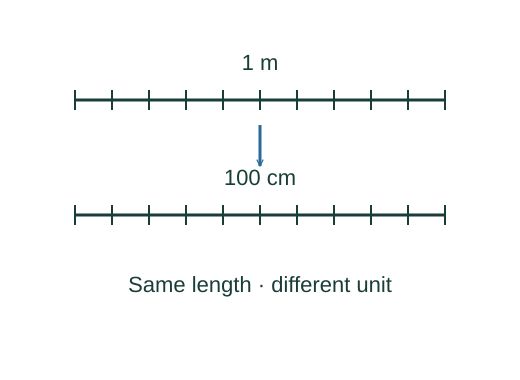

Why unit conversions work
A measurement is a physical quantity, not just a number. Changing units changes the number while preserving the quantity. Dimensional analysis then checks whether a proposed equation could be meaningful.
What the symbols mean
L, M, T denote dimensions of length, mass, and time; they are not particular units. A conversion factor is a ratio of two equal physical quantities.
When this applies
Units refer to the same kind of quantity. Dimensional consistency is necessary for an equation, but cannot determine dimensionless constants or prove a physical law.
Understanding the relation
Here the starting relation defines the quantity being discussed. We can understand that definition and derive its consequences, while keeping the definition itself distinct from those consequences.

Write an equality between units
One kilometre is exactly one thousand metres. Divide this equality by either side: the resulting ratio is one. Multiplication by that ratio cannot change a physical quantity.
Cancel units as algebraic factors
Choose the orientation that cancels the original unit. Time is in the denominator of a speed, so the time conversion must be inverted relative to a distance conversion.
Check dimensions on both sides
Acceleration has dimensions L/T². Multiplying it by a time squared produces a length, which can be added to another length. A velocity cannot be added directly to a position.
See what dimensions cannot determine
Both at² and ½at² have the same dimension. The factor ½ comes from how velocity changes during the motion, not from unit analysis.
A closer lookWhere does the factor ½ come from? ↗Derive the constant-acceleration equationsA worked example
A length of 2.5 cm is 0.025 m. An area of 2.5 cm² is 2.5 × 10⁻⁴ m², because the entire conversion factor must be squared.
Derivation behind this calculation ↗A point to keep straight
Do not convert square or cubic units using an unsquared or uncubed length factor.
Check the assumptions and derivation ↗